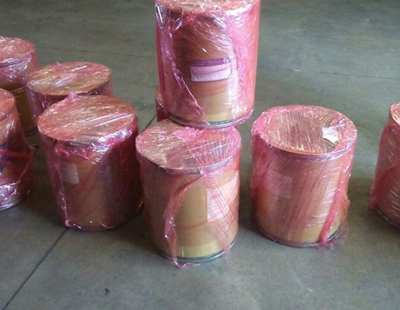

Real Chubut - Agencia de Noticias


El eslabón que une crimen y política: la efedrina

La efedrina ha sido, durante el kirchnerismo, el principal eslabón que unió crimen y política. Es una palabra maldita, que ya lleva más de una década atravesando la vida pública. Alrededor de esta sustancia acaba de estallar otro escándalo: por una denuncia del director de la Aduana suspendido, Juan José Gómez Centurión, se descubrieron 10 tambores de pseudoefedrina almacenados en un depósito de Aeropuertos Argentina 2000, en Ezeiza.
Esa mercadería estaba allí desde el 11 de junio de 2011. Había sido enviada desde Suiza hacia Paraguay. Pero la Secretaría para la Prevención de la Drogadicción y la Lucha contra el Narcotráfico (Sedronar) impidió su traslado porque carecía de un certificado que debía otorgar la Agencia Nacional de Medicamentos, Alimentos y Tecnología Médica (Anmat).
La detección de la droga arrojó ayer al centro de la escena al poderoso empresario Hugo Sigman. Los barriles de Ezeiza habían sido enviados por la filial suiza de su laboratorio, Chemo, al laboratorio paraguayo Comfar.
Desde Chemo aclararon ayer que la droga incautada es pseudoefedrina, menos potente que la efedrina. También dijeron que tanto ellos como su cliente suscribieron reclamos a la Aduana, a través del transportista Intercargo, por el destino de la mercadería, sin recibir respuesta formal alguna. la nacion tuvo acceso a esos documentos. No hubo, sin embargo, ninguna acción legal de Chemo ni de Comfar para recuperar la mercadería. Además, los voceros de Sigman consignaron que Chemo no produce efedrina ni pseudoefedrina, a pesar de tener una planta en la India, un gran fabricante de ese precursor químico. Admiten, en cambio, que han comercializado pseudoefedrina en América latina, pero no en la Argentina. Y que, hasta 2010, importaron cuatro kilos por año a través del laboratorio Elea, del que Sigman es accionista, para la fabricación del jarabe Benadryl.
Sigman acaso está obligado a dar más explicaciones que cualquier otro empresario por su estrechísima vinculación al kirchnerismo. Además de encabezar una empresa farmacéutica multinacional y de expandirse en el sector agropecuario, este médico psiquiatra incursionó en la cinematografía y en la industria periodística. Su primera aparición en la política reciente se debió a esta última afición. Sigman ofreció su revista Txt para que el arrepentido Mario Pontaquarto denunciara que durante el gobierno de Fernando de la Rúa se pagaron sobornos en el Senado. Pontaquarto realizó esa imputación bajo el amparo, o el impulso, del primer jefe de Gabinete de los Kirchner, Alberto Fernández. Poco tiempo después de su catarsis, el infidente reveló que recibió de Sigman US$ 18.000 dólares para remunerar a su abogado y proteger a la familia. Esa solidaridad despertó el rencor de muchos líderes radicales. Una curiosidad: el estudio Wortman Jofre, que patrocinaba a Pontaquarto, hoy defiende a Gómez Centurión.
No fue la única vinculación de Alberto Fernández con el mundo de los laboratorios. La recaudación de la campaña electoral de 2007 estuvo bajo su responsabilidad a través de Héctor Capaccioli. Era el encargado de controlar, como superintendente de Salud, a las droguerías que ayudaron a Cristina Kirchner a través de su recaudador, Héctor Capaccioli. Deliciosa circularidad. Entre los mecenas estuvieron Sebastián Forza y Julio Pose. Forza es uno de los tres empresarios que exportaban efedrina a los carteles mexicanos y que fueron asesinados en Quilmes y hallados en General Rodríguez. Pose fue la última persona con la que ellos se encontraron. Se trata de un informante de la SIDE de los tiempos en que reinaba Antonio Stiuso.
El financiamiento de la carrera presidencial de 2007 encierra muchas claves de la relación entre el kirchnerismo y el dinero negro. A esa caja estaban destinados también los caudales del chavismo que trajo desde Caracas Guido Antonini Wilson, según él declaró en Miami. La investigación estuvo a cargo del juez Norberto Oyarbide y, más tarde, de Ariel Lijo. Recién en junio último, diez años después de que se produjeran los hechos, se fijaron las primeras sanciones. Una de las obsesiones de Elisa Carrió es que la reforma electoral que se debate en el Congreso no incluya una amnistía para estas irregularidades.
Además de estar próximo a Fernández, Sigman tuvo una fuerte gravitación sobre quien fue ministro de Salud de Cristina Kirchner, Juan Manzur. En Tucumán aseguran que uno de los gerentes de la controvertida campaña de Manzur a la gobernación, el ex gestor de la familia Eskenazi, Adrián Kochen, está también ligado a Sigman. Durante aquella competencia Mauricio Macri anunció que, si él ganaba, el sucesor de Manzur en Salud sería su principal adversario, José Cano. La promesa no se cumplió. Varios dirigentes de la UCR creen que fue por la influencia de Sigman sobre el nuevo oficialismo. También le atribuyen la continuidad de Lino Barañao en el Ministerio de Ciencia y Tecnología.
La amistad de Sigman con Manzur tuvo una manifestación durante la reunión de empresarios para conmemorar en Tucumán el Bicentenario de la Independencia. El gobernador recibió allí, entre otros, a Adrián Werthein, Jorge Brito, Eduardo Eurnekian y Gustavo Cinosi. Íntimo de Carlos Zannini, Cinosi realizó inversiones hoteleras en la provincia durante la gestión de José Alperovich. En los últimos tiempos ganó celebridad por una vieja sociedad con Jorge Chueco, el abogado de Lázaro Báez.
Sigman realzó esa celebración con la presencia de su amigo Felipe González. Es un vínculo que cultiva en España, donde Chemo tiene una de sus sedes principales. Y donde creció el protagonismo de uno de sus hijos, Leandro Sigman: fue el fundador de la Cámara Empresarial Argentina, bajo el padrinazgo del embajador kirchnerista Carlos Bettini, otro allegado a González. Además de desarrollar su negocio farmacéutico, Sigman fundó en Madrid una editorial, subsidiaria de la argentina Capital Intelectual. Se llama Clave Intelectual. Con ella editó en 2012 Volver a Keynes, la tesis de Axel Kicillof.
Sigman busca proyección en el mundo cultural. Su sitio web destaca las reflexiones que comparte sobre política internacional con el brillante González y el genial Daniel Barenboim. Esas inquietudes se extienden hasta el campo religioso. Un ejemplo: el miércoles pasado visitó al papa Francisco en Roma, en un encuentro interreligioso del que participaron numerosos argentinos. Allí Sigman se reencontró con Cinosi, encargado de esa área en la OEA.
Sigman deberá aclarar en los tribunales que la carga de pseudoefedrina que comercializó en 2011 entre Suiza y Paraguay no lo inscribe en la crónica policial en la que está atrapado el kirchnerismo por el tráfico de sustancias similares. Más allá de este problema, que es el principal, su aparición bajo los reflectores alienta conjeturas y, es posible, habladurías. Por lo menos dos dirigentes del oficialismo aseguran que existe una aproximación reciente de Stiuso con Sigman. Es más, creen que comieron juntos por lo menos una vez en los últimos dos meses. Es una especulación que, de ser cierta, alimentaría la presunción inicial de Gómez Centurión: "Cuando me metí con la efedrina toqué un cable de alto voltaje".
La Justicia tal vez le dé la razón a Sigman y determine que su relación con la efedrina es nada más que un malentendido, provocado por la carga de una sustancia similar. Igual la denuncia de Gómez Centurión tiene efectos relevantes. Obliga a esclarecer el comportamiento de la Aduana y de la Policía de Seguridad Aeroportuaria (PSA). Un detalle: el cargamento que se investiga quedó demorado poco tiempo después de que desplazaran de la Aduana a Silvina Tirabassi, la esposa de Damián Sierra, el funcionario que acompañó a Stiuso a salir del país a comienzos de 2015.
El día en que Centurión hizo la denuncia, el Boletín Oficial publicó que la Aduana había dispuesto que la pseudoefedrina pasara a rezago. El descubrimiento desató una crisis en el gabinete nacional. La ministra de Seguridad, Patricia Bullrich, denunció que la PSA había informado sobre esos barriles en mayo al director de la Aduana de Ezeiza, Gustavo Curátolo. Pero la Aduana, según Bullrich, no hizo la denuncia. Fue una imputación velada contra Gómez Centurión. O, quizás, una ratificación de lo que él viene señalando: que la Aduana está carcomida por la corrupción y que, por querer depurarla, a él le tendieron una trampa y terminaron suspendiéndolo. El juez que debe despejar la incógnita es Ariel Lijo.
La denuncia de Gómez Centurión cobija pormenores interesantes. La formuló a partir de un anónimo que le informó pocos días antes el lugar donde estaba la pseudoefedrina. ¿Se lo envió alguien que sabía que, en esas horas, la Aduana mandaría a rezago los barriles? Es posible que esa disposición se adecue a la normativa. Pero, en el contexto político y judicial que rodea este tipo de sustancias, ¿era sensato que la Aduana no hiciera una denuncia? Sencilla conclusión: lo ocurrido el miércoles pasado agrava el desafío en el que se encuentra Macri frente al caso Gómez Centurión y, en un sentido más general, frente al arraigo de las mafias en el Estado.
Con independencia del desenlace, la acusación del funcionario desplazado tuvo consecuencias impensadas. Por primera vez se encontró una sustancia similar a la efedrina en Ezeiza, cuya retención carece aún de explicaciones. Rafael Bielsa, el presidente de Aeropuertos Argentina 2000, ordenó una auditoría cuyo resultado publicó ayer Hugo Alconada Mon en la nacion. Confirma lo que viene denunciando Centurión: que algunos funcionarios de la Aduana son el principal obstáculo para combatir el contrabando. Un detalle: antes de estar en Aeropuertos, Bielsa fue titular de la Sedronar. Sabe de qué habla.
El otro efecto de la denuncia de Gómez Centurión y el hallazgo del, según Sigman, irreprochable cargamento de pseudoefedrina es que, también por primera vez, la documentación completa de la Aduana de Ezeiza está en manos de la justicia federal. Queda cada vez más clara la necesidad de garantizar la calidad de esa institución.